Continuity#
Discussion & Definitions#
Many functions have the property that their graphs can be traced with a pencil without lifting the pencil from the page. Such functions are called continuous. Other functions have points at which a break in the graph occurs, but satisfy this property over intervals contained in their domains. They are continuous on these intervals and are said to have a discontinuity at a point where a break occurs. We define continuity at a point as follows.
Definition: Continuous at a Point
A function \(f(x)\) is continuous at a point a if and only if the following three conditions are satisfied:
\(f(a)\) is defined
\(\displaystyle \lim_{x \to a} f(x)\) exists
\(\displaystyle \lim_{x \to a} f(x) = f(a)\)
A function is discontinuous at a point a if it fails to be continuous at a.
Note
Many textbooks will simply define a function \(f(x)\) to be continuous at a point a if and only if \(\displaystyle \lim_{x \to a} f(x) = f(a)\). In this case, it is implied that both sides of this equation are defined, hence giving the three conditions above.
To verify that a function is continuous at a point you need to verify the three criteria in the definition. Usually, you attack these in the order they are given, this tends ot be the easiest and quickest approach. If any step fails then you have a discontinuity and you are finished, no need to verify any more after one fails.
For example, say we wanted to show that the function \(f(x) = x^2\) is continuous at \(x = 2\).
\(f(2) = 2^2 = 4\), criteria verified.
\(\displaystyle \lim_{x \to 2} x^2 = 4\), criteria verified.
\(\displaystyle \lim_{x \to 2} x^2 = 4 = f(2)\), criteria verified.
So \(f(x) = x^2\) is continuous at \(x = 2\).
Types of Discontinuities#
For a function to be discontinuous at a point, one or more of the three properties must fail to be true. Let’s start with the first criteria, \(f(a)\) is defined. All this means is that if the function does not exist at a it is not continuous at a. For example if we take the function \(f(x) = \frac{\sin(x)}{x}\), it is clearly not defined at \(x=0\) since \(f(0) = \frac{0}{0}\) which is undefined. The graph of this function has a hole in it at \(x=0\).
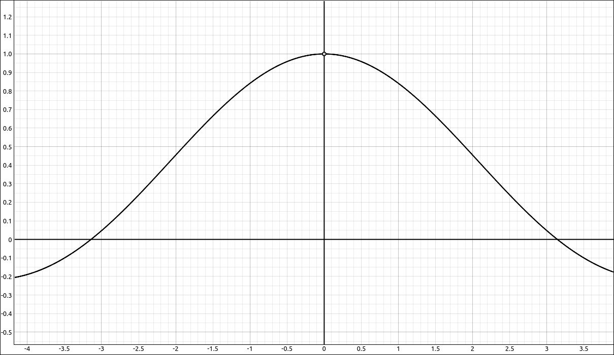
\(f(x) = \frac{\sin(x)}{x}\)#
So \(f(x) = \frac{\sin(x)}{x}\) is not continuous at \(x=0\).
Looking at the second criteria, \(\displaystyle \lim_{x \to a} f(x)\) exists. There are several ways that this can fail. For example, the left and right hand limits do not match or if we have an infinite limit. For example, the floor function, \(f(x) = \left\lfloor{x}\right\rfloor\),
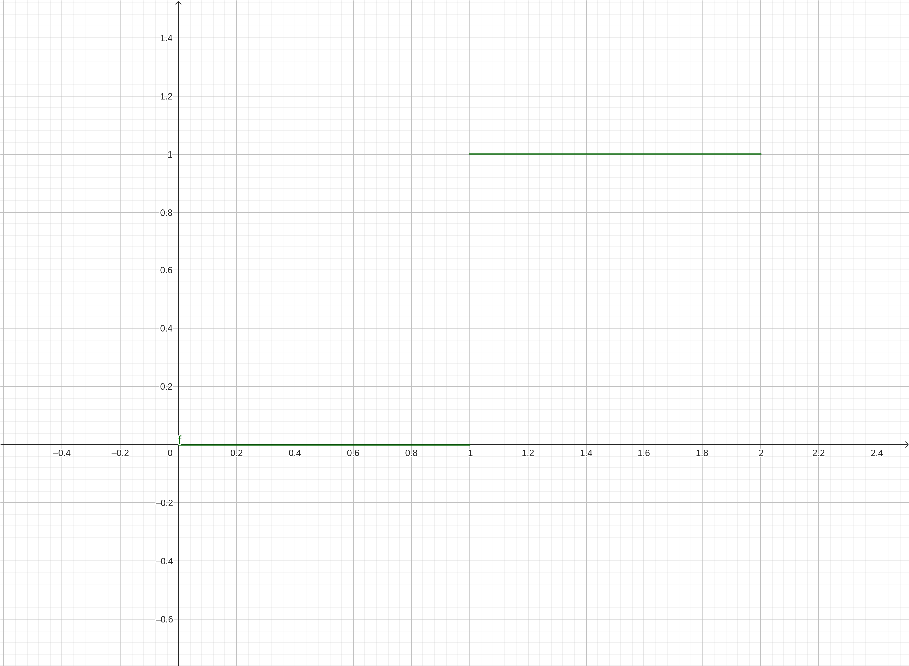
\(f(x) = \left\lfloor{x}\right\rfloor\)#
so
So \(f(x) = \left\lfloor{x}\right\rfloor\) is not continuous at \(x=1\), in fact \(f(x) = \left\lfloor{x}\right\rfloor\) is discontinuous at every integer. Note that the function is defined at \(x=1\), \(f(1) = 1\), so the first criteria is satisfied, in fact the domain of \(f(x) = \left\lfloor{x}\right\rfloor\) is \(\mathbb{R}\).
As for infinite limits, the function \(f(x) = \frac{1}{x^2}\), has an infinite limit at \(x=0\) and hence is discontinuous at \(x=0\) as well. In this case the function is not defined at \(x=0\) either.
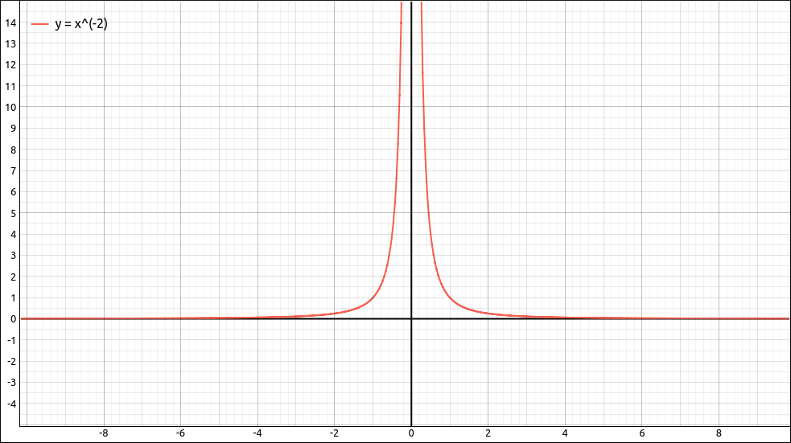
\(f(x) = \frac{1}{x^2}\)#
If we alter this function a little by defining it at \(x=0\), like,
Then \(f(0) = 0\) is defined but \(\lim_{x \to 0} f(x)\) is still undefined and this function is still discontinuous at \(x=0\).
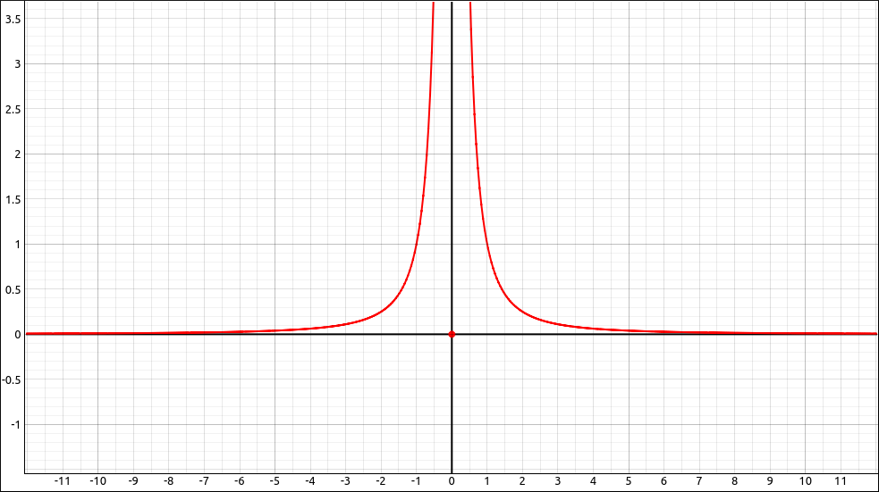
\(f(x) = \frac{1}{x^2}\) Redefining at \(x=0\)#
Looking at the third criteria, \(\displaystyle \lim_{x \to a} f(x) = f(a)\), this assumes that both the function and the limit exist but they are not equal to ech other. This happens with the following piecewise defined function.
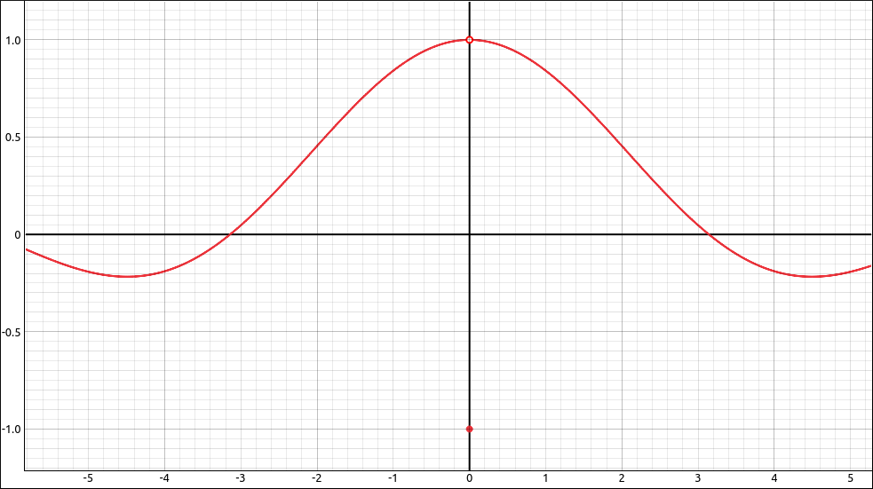
\(f(x) = \frac{\sin(x)}{x}\) Redefining at \(x = 0\)#
For this function,
Hence the function is discontinuous at \(x = 0\).
On the other hand, what if we had altered the above function to,
Then
so this function is continuous at \(x = 0\).
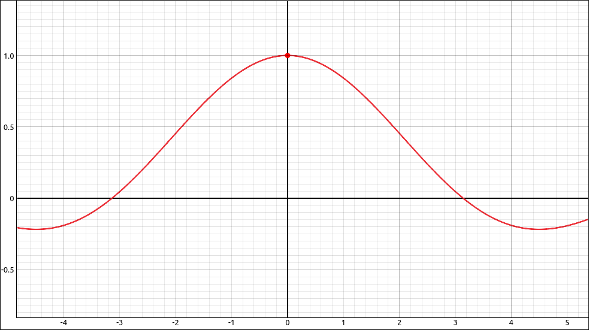
\(f(x) = \frac{\sin(x)}{x}\) Redefining at \(x = 0\)#
This last case is very important. We know that \(f(x) = \frac{\sin(x)}{x}\) is discontinuous at \(x = 0\), but by redefining the function at a single point (defining \(f(0) = 1\)) we were able to remove the discontinuity.
Putting all of this together we can put discontinuities into three categories.
Definition: Types of Discontinuous
If a function \(f(x)\) is discontinuous at \(x = a\) then,
\(f\) has a removable discontinuity at a if \(\displaystyle \lim_{x \to a} f(x)\) exists.
\(f\) has a jump discontinuity at a if \(\displaystyle \lim_{x \to a^+} f(x)\) and \(\displaystyle \lim_{x \to a^-} f(x)\) both exist but \(\displaystyle \lim_{x \to a^+} f(x) \neq \lim_{x \to a^-} f(x)\).
\(f\) has an infinite discontinuity at a if \(\displaystyle \lim_{x \to a^+} f(x) = \pm\infty\) or \(\displaystyle \lim_{x \to a^-} f(x) = \pm\infty\).
If we revisit the examples above and categorize them,
The function \(f(x) = \frac{\sin(x)}{x}\) has a removable discontinuity at \(x=0\).
The function \(f(x) = \left\lfloor{x}\right\rfloor\) has a jump discontinuity at each integer.
The function \(f(x) = \frac{1}{x^2}\) has an infinite discontinuity at \(x=0\).
The function,
has an infinite discontinuity at \(x=0\).
The function,
has a removable discontinuity at \(x=0\), redefine \(f(0) = 1\).
Tip
If you are using a calculator or computer to help determine continuity or discontinuity you should use algebraic methods if possible. While some graphical systems are very good with discontinuities most are not. For example, the plots of \(f(x) = \frac{\sin(x)}{x}\) in GeoGebra, CLAE, and Maxima are respectively.
GeoGebra
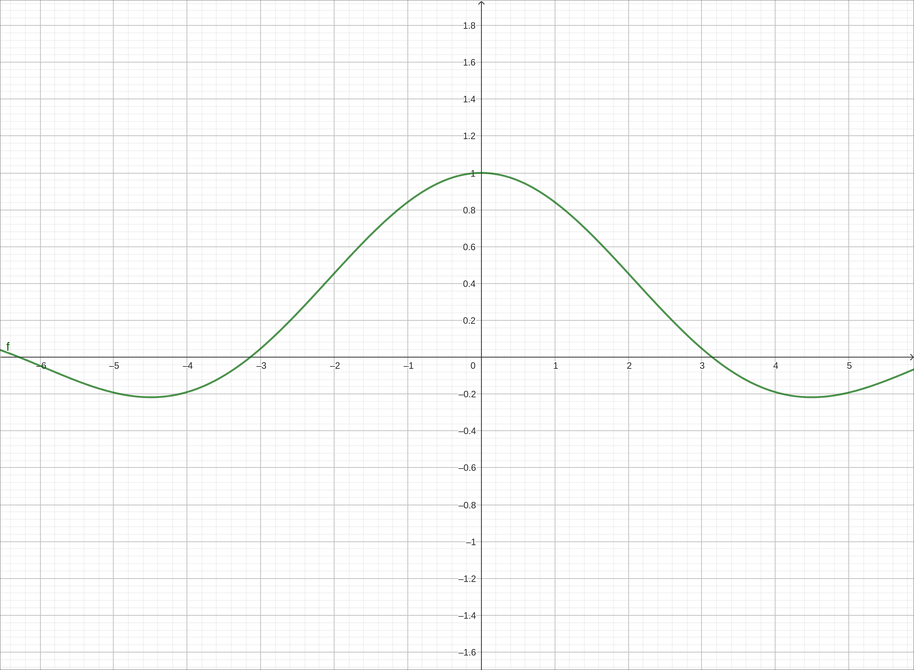
Graph of \(f(x) = \frac{\sin(x)}{x}\) in GeoGebra#
CLAE
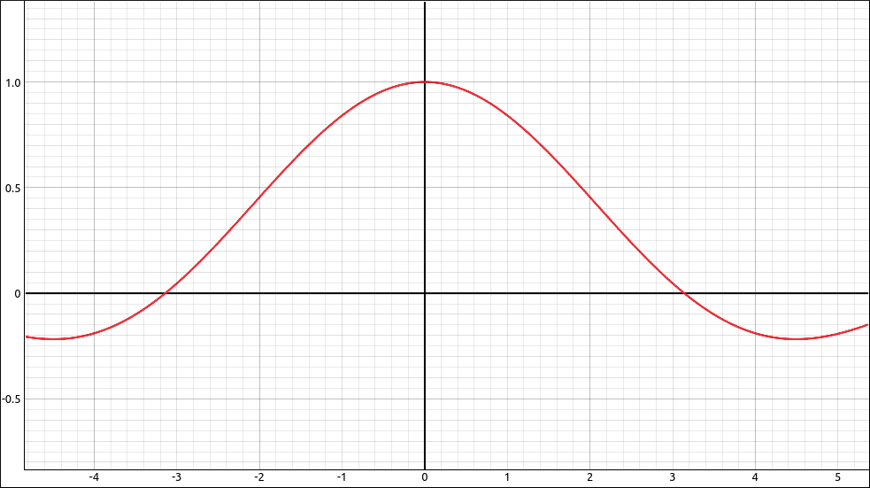
Graph of \(f(x) = \frac{\sin(x)}{x}\) in CLAE#
Maxima
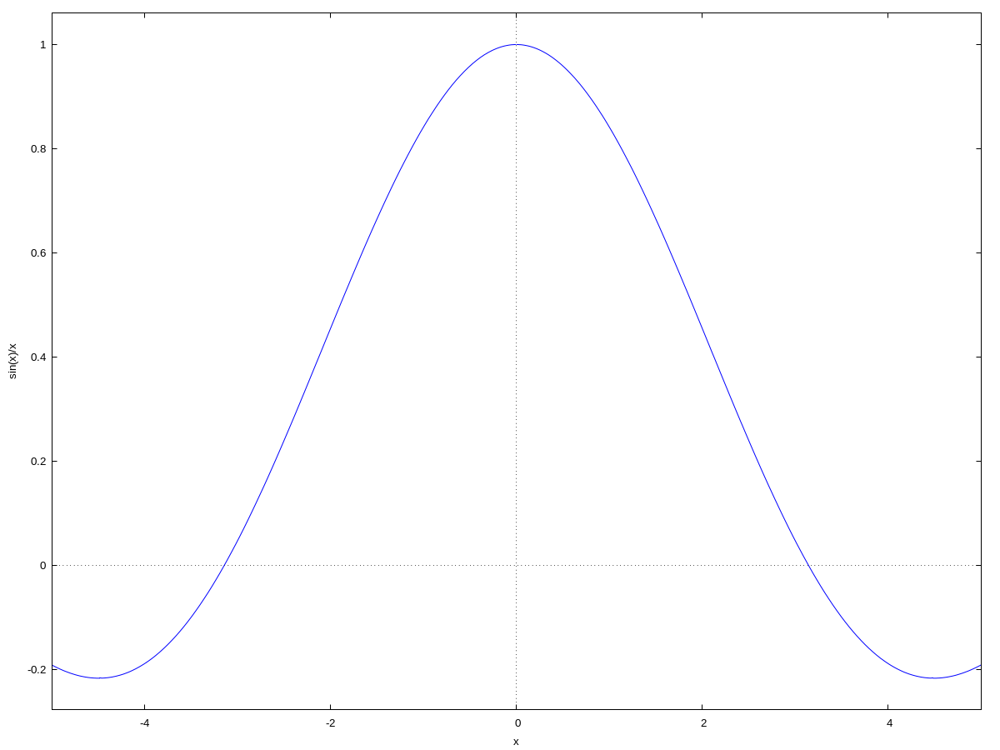
Graph of \(f(x) = \frac{\sin(x)}{x}\) in Maxima#
None of these is showing the discontinuity at \(x = 0\). Also if we plot \(f(x) = \left\lfloor{x}\right\rfloor\) in all three systems we get, respectively,
GeoGebra
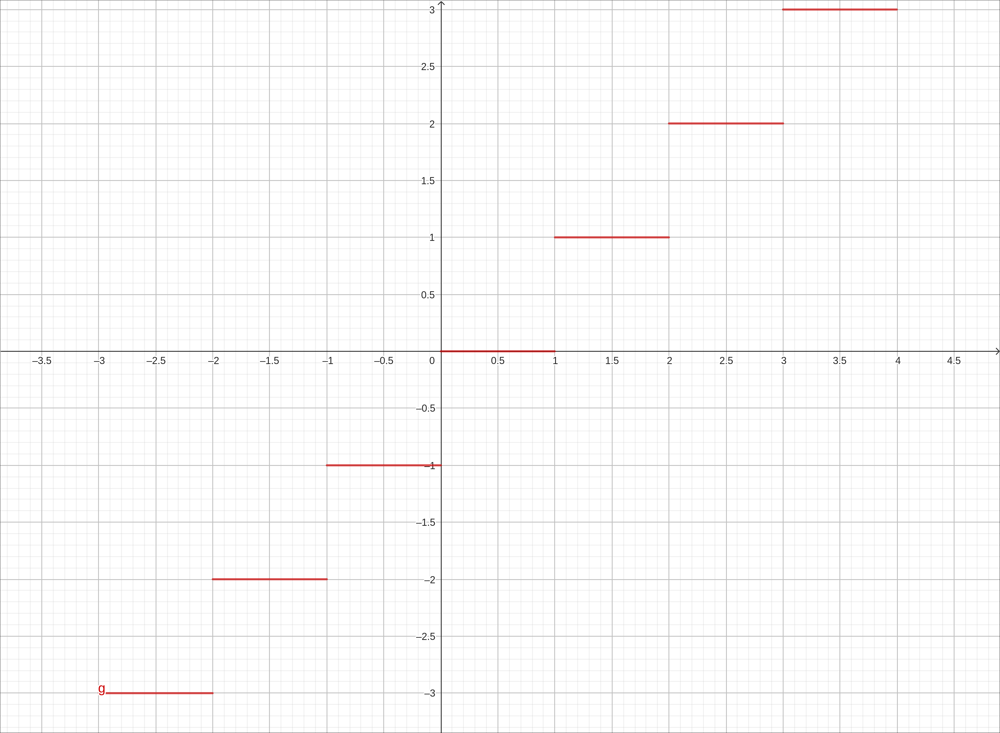
Graph of \(f(x) = \left\lfloor{x}\right\rfloor\) in GeoGebra#
CLAE
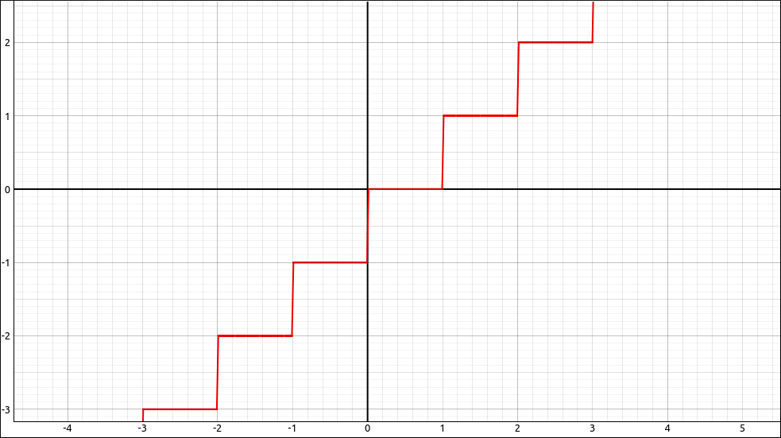
Graph of \(f(x) = \left\lfloor{x}\right\rfloor\) in CLAE#
Maxima
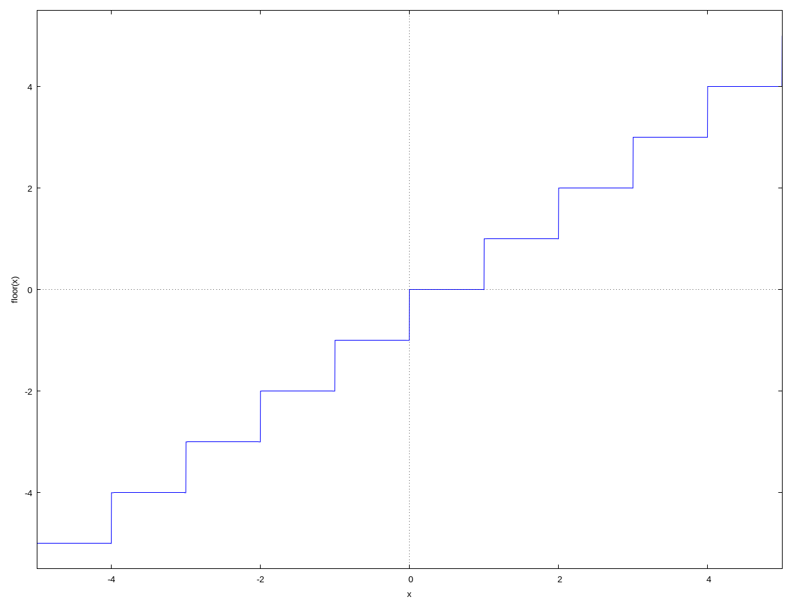
Graph of \(f(x) = \left\lfloor{x}\right\rfloor\) in Maxima#
GeoGebra does the best job at this but even with the showing of the discontinuities it does not include the open and closed points at the discontinuities.
Example: \(f(x) = \frac{x^{2} - 4}{x - 1}\)#
We will attack these using algebraic methods. Obviously, \(x = 1\) is the only point that will be a possible problem since the denominator is 0 here.
GeoGebra#
Input the function, assume that this came in as the function f.
(x^2-4)/(x-1)
If we graph this function we get,
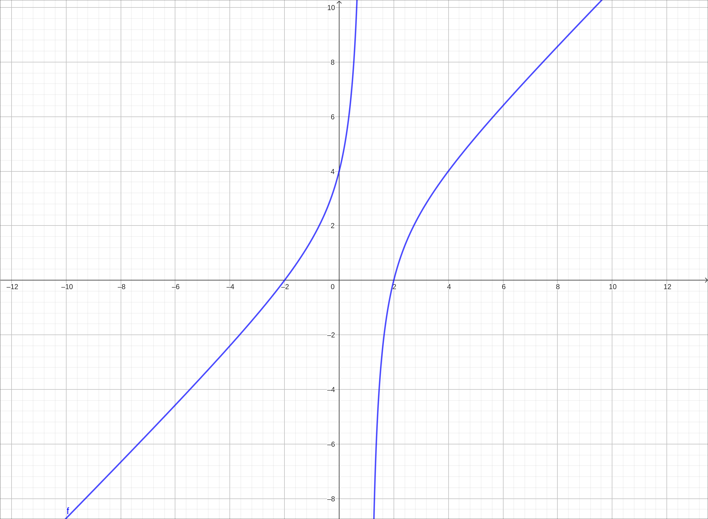
\(f(x) = \frac{x^{2} - 4}{x - 1}\)#
From the picture it is fairly clear that we have an infinite discontinuity at \(x = 1\), nonetheless we will continue with an algebraic analysis.
We can evaluate this function by selecting a new cell and typing in f(1). GeoGebra returns \(-\infty\), which is good enough to algebraically determine that we have a discontinuity here but is not mathematically accurate.
We will go further and take the one-sided limits. Select a new cell and type in limit, select LimitAbove, put in f as the function and 1 as the limit point and GeoGebra returns \(-\infty\). This is enough to algebraically verify that the function has an infinite discontinuity at \(x = 1\).
Note that if we did the LimitBelow we would get \(\infty\). We would not need to go this far to get our conclusion.
CLAE#
Input the function,
(x^2-4)/(x-1)
If we graph this function we get,
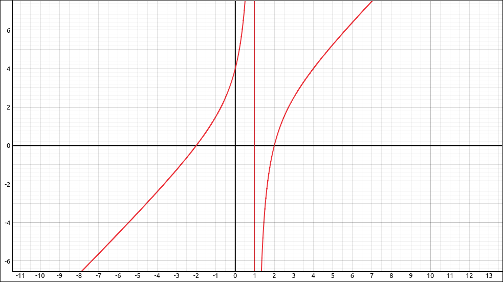
\(f(x) = \frac{x^{2} - 4}{x - 1}\)#
From the picture it is fairly clear that we have an infinite discontinuity at \(x = 1\), nonetheless we will continue with an algebraic analysis.
We can evaluate this function by selecting the expression, then selecting, Algebra > Evaluate the variable is x and the expression is 1. CLAE returns zoo, this stands for complex infinity (the z is the designation for complex numbers and oo is our notation for infinity). We wil not get into what complex infinity really is (take a course in Complex Variables) but this is just CLAE’s way to tell us that the function is diverging to one of the infinities. Nonetheless, the function is undefined at \(x = 1\) and we know that there is a discontinuity at this point.
We will go further and take the one-sided limits. Select the function, select Calculus > Limit, variable x, limit point 1, direction Left. The result is \(\infty\). This is enough to algebraically verify that the function has an infinite discontinuity at \(x = 1\).
Note that if we did the limit from the right we would get \(-\infty\). We would not need to go this far to get our conclusion.
Maxima#
Input the function,
kill(all);
f(x):=(x^2-4)/(x-1)
If we graph this function we get,
wxplot2d([f(x)], [x,-5,5], [y,-15,15])
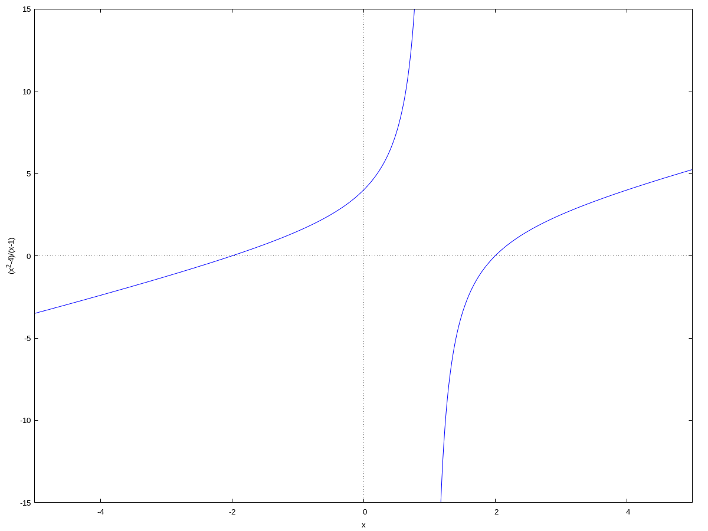
\(f(x) = \frac{x^{2} - 4}{x - 1}\)#
From the picture it is fairly clear that we have an infinite discontinuity at \(x = 1\), nonetheless we will continue with an algebraic analysis.
We can evaluate this function by entering f(1), Maxima returns an error message that the value is undefined, and hence we know that there is a discontinuity at this point.
We will go further and take the one-sided limits.
limit(f(x), x, 1, minus)
The result is \(\infty\). This is enough to algebraically verify that the function has an infinite discontinuity at \(x = 1\).
Note that if we did the limit from the right
limit(f(x), x, 1, plus)
we would get \(-\infty\). We would not need to go this far to get our conclusion.
Example: \(f(x) = \frac{x^{2} - 4}{x - 2}\)#
We will attack these using algebraic methods. Obviously, \(x = 2\) is the only point that will be a possible problem since the denominator is 0 here.
GeoGebra#
Input the function, assume that this came in as the function f.
(x^2-4)/(x-2)
If we graph this function we get,
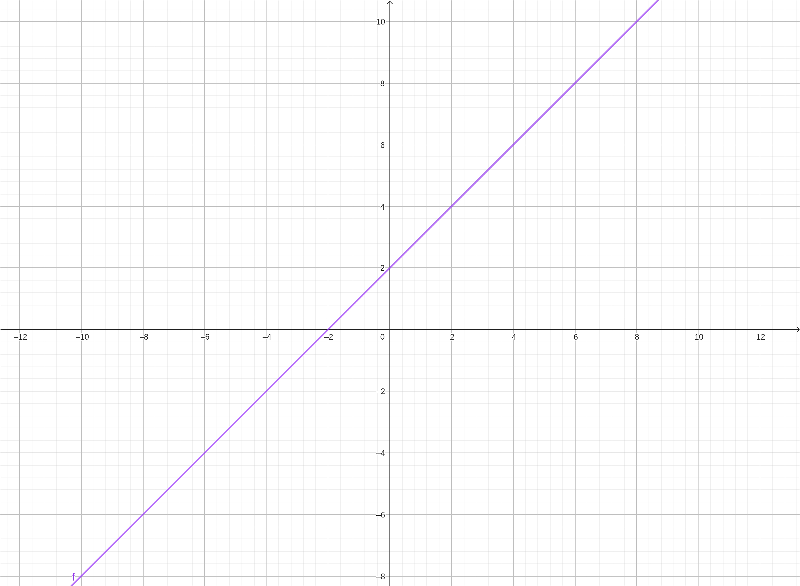
\(f(x) = \frac{x^{2} - 4}{x - 2}\)#
If were just looking at the graph and do not think about the function that it came from we would conclude that the function was either continuous everywhere or if there were discontinuities they would be removable. Considering the function it is clear that \(x = 2\) is the only point we need to concern ourselves with.
Evaluating the function at 2 returns ? in GeoGebra, in other words it is undefined and we have verified a discontinuity.
Using the methods from the first example, or the Limit function we see that
This verifies that the discontinuity is removable. If did wish to remove the discontinuity and construct a function that is equal to the given one for all \(x \neq 2\) and be continuous everywhere we simply need to define the function at \(x = 2\) and by the third criteria the value must match the limit, hence,
CLAE#
Input the function, assume that this came in as the function f.
(x^2-4)/(x-2)
If we graph this function we get,
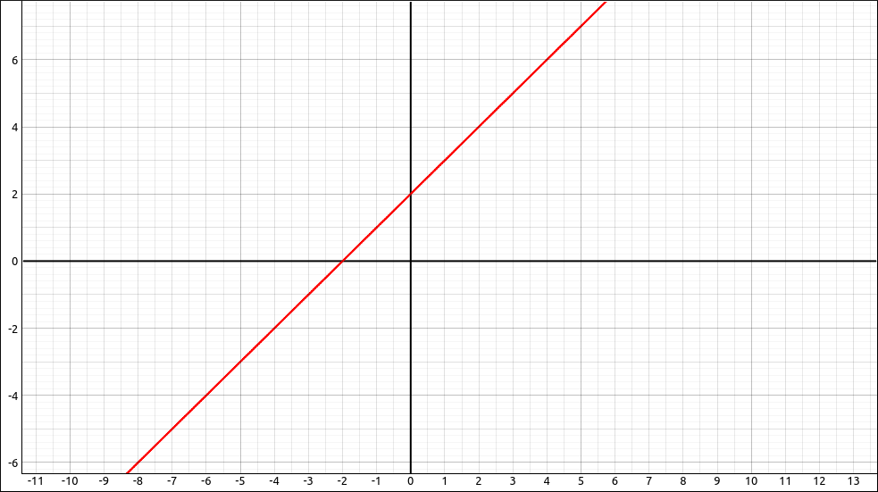
\(f(x) = \frac{x^{2} - 4}{x - 2}\)#
If were just looking at the graph and do not think about the function that it came from we would conclude that the function was either continuous everywhere or if there were discontinuities they would be removable. Considering the function it is clear that \(x = 2\) is the only point we need to concern ourselves with.
Evaluating the function at 2 returns nan in CLAE, which stands for “not a number”, in other words it is undefined and we have verified a discontinuity.
Using the methods from the first example, the two-sided limit of the function is
This verifies that the discontinuity is removable. If did wish to remove the discontinuity and construct a function that is equal to the given one for all \(x \neq 2\) and be continuous everywhere we simply need to define the function at \(x = 2\) and by the third criteria the value must match the limit, hence,
Maxima#
Input the function, assume that this came in as the function f.
kill(all);
f(x):=(x^2-4)/(x-2)
If we graph this function we get,
wxplot2d([f(x)], [x,-5,5], [y,-5,5])
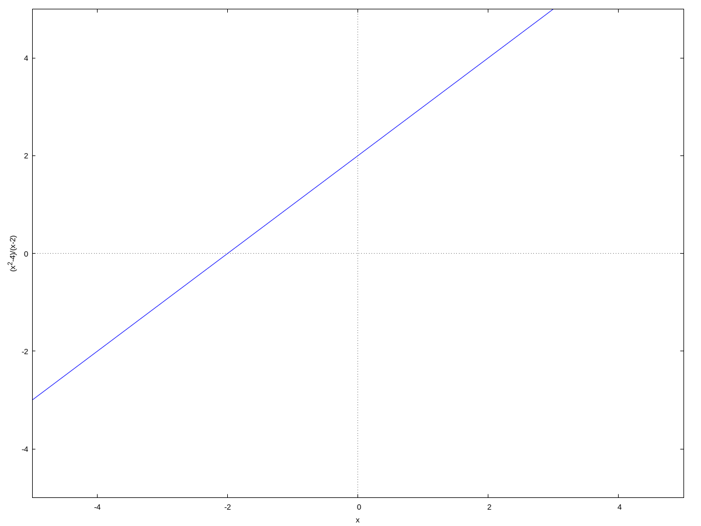
\(f(x) = \frac{x^{2} - 4}{x - 2}\)#
If were just looking at the graph and do not think about the function that it came from we would conclude that the function was either continuous everywhere or if there were discontinuities they would be removable. Considering the function it is clear that \(x = 2\) is the only point we need to concern ourselves with.
Evaluating this function at 2 by entering f(2), Maxima returns an error message that the value is undefined, and hence we know that there is a discontinuity at this point.
Using the methods from the first example, the two-sided limit of the function is
limit(f(x),x,2)
This verifies that the discontinuity is removable. If did wish to remove the discontinuity and construct a function that is equal to the given one for all \(x \neq 2\) and be continuous everywhere we simply need to define the function at \(x = 2\) and by the third criteria the value must match the limit, hence,